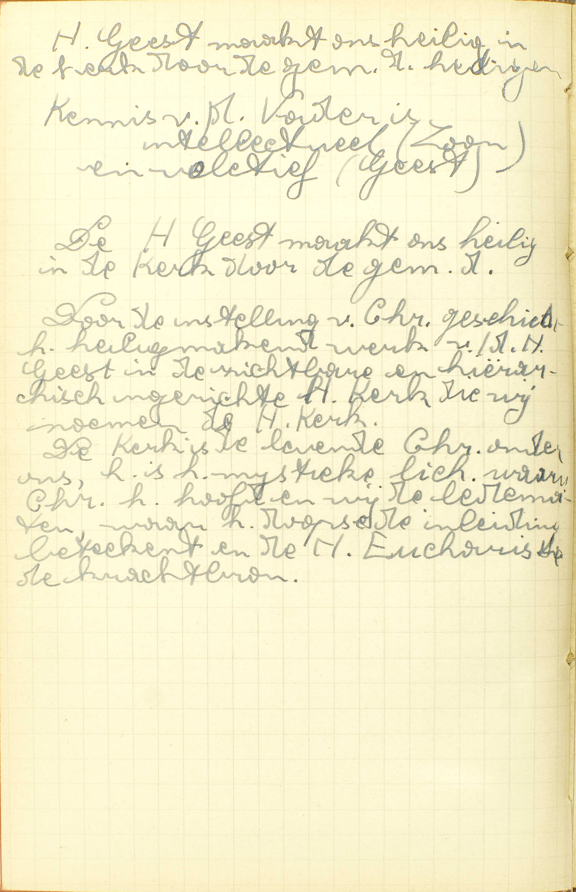

BEKNOPTE VERKLARING
van de
MECHELSE CATECHISMUS
ten gebruike van het middelbaar onderwijs
EERSTE DEEL
–
ELFDE LES
Van God de Heilige Geest
| Ik geloof in de H. Geest | De H. Geest in zichzelf beschouwd | Natuur | Hij is waarachtig God | Is de Heilige Geest minder dan de andere twee Personen? | ||||
| Wat eer zijn wij God de Heilige Geest schuldig? | ||||||||
| De hoeveelse persoon van de Heilige Drievuldigheid | Hij is de derde Persoon van de Heilige Drievuldigheid | Van welke Persoon komt de Heilige Geest? | ||||||
| De werken van de H. Geest | Verschijningen | Hoe heeft zich de Heilige Geest vertoond? | ||||||
| Komst tot ons | Wanneer komt de Heilige Geest tot ons? | Welk is het meeste werk van de Heilige Geest? | Waarom wordt onze heiligmaking de Heilige Geest toegeschreven? | |||||
Wat gelooft gij van de Heilige Geest?
Dat Hij waarachtig God is, en de derde Persoon in de H. Drievuldigheid
 V. Wat verstaat gij door de H. Geest, als gij zegt: « Ik geloof in de H. Geest » of, welke natuur heeft Hij en welke Persoon is Hij?
A. Ik geloof dat Hij waarachtig God is: dat Hij evenals de Vader en de Zoon, waarlijk de goddelijke natuur heeft, en de derde Persoon in de H. Drievuldigheid: dat Hij een goddelijke Persoon is, namelijk, de derde van de H. Drievuldigheid.
Van welke Persoon komt de Heilige Geest?
Van God de Vader en God de Zoon
V. Van welke goddelijke Persoon komt de H. Geest voort?
A. Hij komt voort van God de Vader en God de Zoon: dat vloeit uit het antwoord op de 1° vraag, lerende dat Hij de derde Persoon isin de H. Drievuldigheid. Kwam Hij van niemand voort, dan zou Hij de eerste Persoon zijn; kwam Hij van de Vader alleen voort, dan zou Hij, gelijk God de Zoon, de tweede Persoon zijn; en kwam hij van God de Zoon alleen voort, dan zou God de Zoon de eerste Persoon zijn, en God de H. Geest, de tweede.
God de H. Geest komt van de Vader en de Zoon voort door de liefde, (zie 5ᵉ les) en dat niet door twee achtereenvolgende werkingen, maar door één en dezelfde werking, aangezien God de Vader en God de Zoon maar één en dezelfde natuur hebben.
Is de Heilige Geest minder dan de andere twee Personen?
Geenszins; maar Hij is even wijs, machtig, eeuwig, enz., als God de Vaderen God de Zoon
A. De reden van dit antwoord is, dat de drie goddelijke Personen maar één en dezelfde goddelijke natuur hebben. (Zie 5ᵉ les, 7ᵉ v.)
Wat eer zijn wij God de Heilige Geest schuldig?
De goddelijke en opperste eer
V. Door eer verstaan wij het uit- of inwendig erkennen van iemands uitmuntendheid.
A. Wij zijn de H. Geest schuldig de goddelijke en opperste eer: wij moeten Hem erkennen als God en Opperste Wezen. De reden daarvan is, dat de eer, gelijk wij gezegd hebben, in het erkennen van iemands uitmuntendheid bestaat ; nu, de H. Geest is wezenlijk God en het Opperste Wezen; dus moet Hij, wanneer wij Hem vereeren, als God en Opperste Wezen erkend worden,
Hoe heeft zich de Heilige Geest vertoond?
In de gedaante van een duif in het doopsel van Christus, en in de gedaante van vurige tongen op de Sinksendag
V. Hoe heeft zich de H. Geest, die uit zijn natuur onzichtbaar is, aan de mensen op een zichtbare wijze vertoond?
A. Hij heeft zich tweemaal vertoond:
1° In het doopsel van Christus: wanneer de H. Joannes Baptista in de Jordaan het doopsel van boetvaardigheid aan Christus bediende, in de gedaante: in de uitwendigen vorm van een duif en dat om, onder het zinnebeeld van die vogel, hijzonderlijk de onschuld en de zachtmoedigheid van Christus te kennen te geven;
2° Op de Sinksendag van de Joden, tien dagen na Christus’ Hemelvaart, in de gedaante van vurige tongen, en wel om, door dat zinnebeeld, de verlichting van het verstand uit te drukken, alsmede de vlam van de liefde, de zuivering van de ziel, de bekwaamheid om het Geloof te prediken en de gave van de talen, wat alles de Apostelen dan ontvingen.
Wanneer komt de Heilige Geest tot ons?
Als Hij op enige nieuwe manier in ons begint te werken
V. Wanneer zegt men dat de H. Geest, die overal tegenwoordig is met zijn wezen, zijn alziende oog en zijn macht, tot ons komt?
A. Hij komt tot ons, als Hij, buiten de gewone en natuurlijke manier van in ons te werken, d.i. buiten het algemeen goddelijk werk van ons te bewaren en ons hulp te geven om dit alles te doen waartoe wij uit onze natuur bestemd zijn, ineen woord buiten het bestieren en bewaren, dat Hij voor ons gedurig doet, op een nieuwe, d.i. buitengewone en bovennatuurlijke manier in ons begint te werken; niet als Hij in ons zulk werk voortzet. Ziehier waarom men terecht leert, dat de H. Geest tot ons komt, als Hij in ons een bovennatuurlijk werk begint: men zegt gemeenlijk, dat iemand in een plaats komt, als hij er op een nieuwe manier begint tegenwoordig te zijn, ’t zij met zijn wezen, ’t zij met zijn oog, ’t zij met zijn macht; welnu, als de H. Geest, buiten zijn gewoon en aloud werk van bestieren en bewaren, in ons een bovennatuurlijk werk aanvangt, dan begint Hij op een nieuwe manier in ons tegenwoordig te zijn, niet met zijn wezen noch met zijn kennis, maar met zijn macht; en daarom zeggen wij terecht, dat Hij dan tot ons komt.
De bovennatuurlijke werken die de H. Geest, buiten onze bewaring en natuurlijke ondersteuning, in ons komende verricht, zijn: de heiligmakende gratie en de dadelijke gratie verleenen, alsmede de gave van mirakelen of voorzeggingen te doen; de H. Schrift ingeven: de Kerk bestieren en zó bijstaan, dat zij noch in haar leer fale, noch door haar vijanden overweldigd worde; de gemeenschap onder de Heiligen teweegbrengen; de Heiligen glorieus doen verrijzen en hun de Hemel geven.
Gelijk de H. Geest tot ons komt, als Hij in ons een bovennatuurlijk werk begint, zo woont Hij in ons, als Hij, door een bijblijvende bovennatuurlijke gave, namelijk, door de heiligmakende gratie, in ons is.
Welk is het meeste werk van de Heilige Geest?
De leden van de waarachtige Kerk van Christus door het uitdelen van zijn gratiën heilig te maken
V. Welk is, onder al de bovennatuurlijke werken die in de uitlegging van de voorgaande vraag genoemd worden, het meeste: het bijzonderste werk van de H. Geest?
A. De leden van de waarachtige Kerk van Christus: al degenen die door het doopsel in de ware Kerk van Christus, namelijk, in de Rooms-Katholieke Kerk getreden zijn, of er, ten minste met de wil, ’t zij deze uitdrukkelijk weze of in een andere begeerte besloten ligge, aan toebehooren, heilig te maken: te zuiveren van de zonden en in die gesteltenis te brengen, welke vereist is om vrienden Gods en erfgenamen van de hemel te wezen; heilig immers is hetzelfde als God toegewijd, God aangenaam; door het uitdelen van zijn gratiën: a) van de heiligmakende gratie, door dewelke wij heilig en de vrienden Gods zijn; b) van de bovennatuurlijke deugden en van de Zeven Gaven van de H. Geest, die de heiligmakende gratie aitoos vergezellen, en er als ‘t ware de vermogens van zijn, gelijk het verstand en de wil de vermogens zijn van de ziel; c) van de dadelijke gratiën, door dewelke de H. Geest de zondaars tot bekeering, en de rechtvaardigen tot volharding in het goed opwekt en hulp verleent.
Onder al de bovennatuurlijke werken van de H. Geest is dat het bijzonderste, aangezien al de andere slechts dienen als middelen tot de heiligmaking of tot de voltrekking daarvan.
Waarom wordt onze heiligmaking de Heilige Geest toegeschreven?
Omdat Hij is de liefde van de Vader en van de Zoon, en uit Gods liefde ons alle heiligheid komt
V. De Catechismus vraagt, waarom het werk van onze heiligmaking de H. Geest bijzonder wordt toegeschreven, en geenszins, waarom Hem dit werk wordt toegeëigend alsof het Hem alleen en niet evenwel de Vader en de Zoon toebehoorde; immers, al de werken die God huiten zich zelf doet, zijn de drie goddelijke Personen gemeen. (Zie 5ᵉ les, 8ᵉ v.)
A. Omdat Hij is de liefde van de Vader en van de Zoon: omdat Hij de eeuwige en oneindige liefde ís die God de Vader en God de Zoon tot elkander hebben, gelijk de Zoon het eeuwig en oneindig volmaakt denkbeeld is dat God de Vader van zich zelf heeft, en uit Gods liefde ons alle heilig heid komt: en omdat die liefde van de Vader en van de Zoon, of de liefde die God tot zich zelven, tot zijn oneindige goedheid heeft, de oorsprong is van al de goddelijke werken waardoor wij tot de heiligheid komen. Deze reden is klaarblijkend: onze heiligheid spruit uit de liefde Gods voort, en de liefde van de Vader en van de Zoon is de Persoon van de H. Geest; dus wordt die heiligmaking natuurlijk de H. Geest toegeschreven.
De hoedanigheden en werken die de goddelijke Personen toegeschreven worden, dienen rechtstreeks om hunn oorsprong te doen uitschijnen. (Zie 5ᵉ les, 8ᵉ v.)
VRAGEN
Welk artikel van het Symbolum wordt hier uitgelegd? — Welke zijn de hoofdpunten van deze les? — Wat stelt de Catechismus voor, nopens ieder van die hoofdpunten?
Zeg de zin van de vraag: Wat gelooft gij van de H. Geest. — Welke natuur heeft de H. Geest, en welke Persoon is Hijf — Bewijs dit door de woorden van de Catechismus.
Waaruit volgt het, dat God de H. Geest van God de Vader en van God de Zoon voortkomt; bewijs uw antwoord. — Hoe komt God de H. Geest van de Vader en van de Zoon voort: is het door twee achtereenvolgende werkingen, ofwel door één alleen; en waarom?
Is de H. Geest, aangezien Hij de derde Persoon is, daarom niet minder oud, wijs of machtig dan de Vader of de Zoon? — Welke is de reden daarvan?
Wat verstaat men door het woord eer? — Wat wil zeggen, dat wij de H. Geest de goddelijke en opperste eer schuldig zijn? — Bewijs dat wij Hem die eer schuldig zijn.
Is de H. Geest uit zijn natuur zichtbaar? — Heeft Hij zich nochtans vertoond? — Hoeveelmaal, waar en hoe heeft Hij dit gedaan? — Wat betekent hier het woord gedaante? — Waarom heeft Hij zich onder de gezegde gedaanten vertoond?
Geef de zin van de vraag: Wanneer homt de H. Geest tot ons. — Wat betekenen de woorden: op een nieuwe manier? — Wat is er op te merken in de woorden: begint te werken? — Hoe zegt men met reden, dat de H. Geest tot ons komt, als Hij op enige nieuwe manier in ons begint te werken? — Noem enige bovennatuurlijke werken van de H. Geest. — Wanneer zegt men dat de H. Geest in ons woont?
Wat betekenen in de vraag: Welk is het meeste werk van de H. Geest, de woorden: het meeste werk? — Wat is er te verstaan door de leden van de waarachtige Kerk van Christus, door heilig maken, door het uitdelen van zijn gratiën? — Waarom is het werk van onze heiligmaking het meeste?
Wat is er hier te verstaan door onze heiligmaking? — Behoort deze aan de H. Geest alleen? — Waarom wordt zij Hem toegeschreven? — Is die reden geldig? — Wat betekenen de woorden: omdat Hij is de liefde van de Vader en van de Zoon? — Wat beduidt men door: en uit Gods liefde ons alle heiligheid komt?